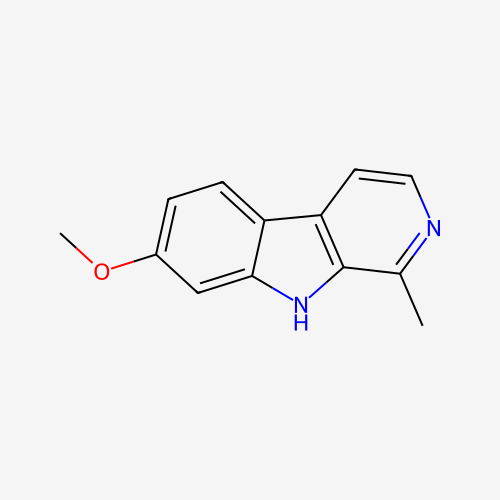
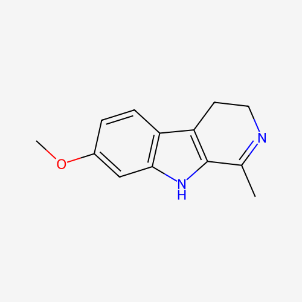

Harmala Alkaloids
Harmine & Harmaline — β-carbolines of Syrian Rue
Dosage
Doses below are for oral harmine and harmaline and are general reference ranges, not recommendations. Sensitivity varies widely between people, and the ranges come from community reports rather than clinical dosing studies. Start at the low end. Harmala alkaloids are not especially psychedelic on their own, even at high doses — the more relevant effect is that they switch off the body's ability to break down many other drugs, which is why the interaction warnings below matter more than the dose chart.
| Level | Harmine (oral) | Harmaline (oral) |
|---|---|---|
| Threshold | ~30 mg | ~40 mg |
| Light | 30–80 mg | 40–90 mg |
| Common | 80–130 mg | 90–140 mg |
| High | 130–180 mg | 140–190 mg |
| Strong | 180 mg+ | 190 mg+ |
Syrian rue seeds: reference doses for powdered seeds are typically given as 2–5 g. Seeds contain roughly 0.44–4.3% harmine and 0.25–5.6% harmaline, plus smaller amounts of tetrahydroharmine (about 0.1%), with total alkaloids of at least 5.9% of dried weight. Because content varies between batches and raw seed is an unreliable and often nauseating way to take them, the actual dose received is hard to predict. Seed doses should never be treated as equivalent to the milligram figures above.
Duration: effects are generally felt over several hours, but enzyme inhibition can outlast the noticeable effects. Treat the interaction window as lasting at least 24 hours after a dose.
Source for dose ranges and plant content: PsychonautWiki (Harmine, Harmaline).
Overview
Harmine and harmaline are the two principal harmala alkaloids — β-carbolines, a family of compounds built from an indole ring fused to a pyridine ring. They are found in the seeds and roots of Syrian rue (Peganum harmala), a hardy desert shrub native to the steppes and deserts from the Mediterranean to Central Asia, and in the Banisteriopsis caapi vine that forms the base of the Amazonian brew ayahuasca. Both act as reversible inhibitors of monoamine oxidase A (RIMA): they temporarily block the enzyme that breaks down serotonin, norepinephrine, and dopamine, and — critically for psychedelic use — the enzyme that would otherwise destroy orally taken DMT in the gut and liver. At higher doses they also inhibit MAO-B, and they act as inverse agonists at the benzodiazepine site of the GABA-A receptor, which contributes to their anxiety-provoking side effects. Taken alone they produce a heavy, dreamlike, somewhat physical state with modest visual effects; their historical and modern importance lies mostly in what they make possible in combination with other plants and in what they can dangerously do to other drugs.
Traditional Use
Syrian rue is known across Iran, Turkey, Central Asia, and the Middle East as esfand (or isfand, espand). Its seeds have been burned as incense for centuries to ward off the evil eye, purify homes, and protect newborns, and the practice remains widespread — the crackling seeds and their aromatic smoke are part of everyday folk ritual in Persian and Central Asian communities. The plant has also been used in traditional medicine for a broad range of complaints, and its seeds produced a red dye used for textiles and carpets. In 1989, Flattery and Schwartz proposed in "Haoma and Harmaline" that Syrian rue may be the source of haoma, the sacred ritual plant of ancient Iran, and the soma of the Vedas; the identification remains a hypothesis debated among scholars, with other plants such as ephedra and Amanita muscaria also proposed.
Scientific Discovery
Chemists isolated harmala alkaloids from Syrian rue seeds in the 1840s, making them among the earlier plant alkaloids to be studied; the structure of harmine was worked out and synthesized in the early twentieth century. When the Amazonian vine Banisteriopsis caapi came to European attention in the 1920s, the alkaloid found in it was named "telepathine" or "yageine" for its reported effects on users, and it was later recognized as the same compound as harmine. In the same decade, harmine (sold as "banisterine") was tried as a treatment for post-encephalitic Parkinsonism, with patients reporting reduced rigidity and tremor. In the 1960s, the Chilean psychiatrist Claudio Naranjo gave harmaline to subjects in an experimental psychotherapy setting, reporting vivid closed-eye imagery — often featuring animals such as large cats — and strong emotional and introspective material, work he later described in "The Healing Journey" (1973). The recognition that these alkaloids were reversible MAO inhibitors, rather than simply the vine's visionary agent, transformed understanding of how ayahuasca works.
Ayahuasca Analogues
Traditional ayahuasca combines Banisteriopsis caapi (the MAOI) with a DMT-containing leaf such as Psychotria viridis (chacruna). Ethnobotanists including Jonathan Ott, in "Ayahuasca Analogues: Pangaean Entheogens" (1994), and Terence and Dennis McKenna, whose "The Invisible Landscape" (1975) explored harmala chemistry, recognized that any plant source of harmala alkaloids could in principle replace the vine. Syrian rue, which grows in dry temperate climates around the world and does not require an Amazonian source, became the most common substitute, and the resulting combinations are sometimes called "ayahuasca analogues" or "anahuasca." Ott coined the term "pharmahuasca" for combinations of pure DMT with pure harmala alkaloids. These combinations are considerably riskier than the traditional brew in one respect: dose and potency depend on the person preparing them, and the margin for error in mixing MAOIs with other active substances is small. See the pages on DMT and 5-MeO-DMT for more on those compounds.
Effects
Harmala effects are dose-dependent and typically appear within an hour or two of ingestion. At light doses the alkaloids produce a calm, heavy, introspective state, often with drowsiness and vivid dreams that night. Higher doses can bring pattern recognition enhancement, closed-eye imagery, and in some people mild hallucinations, together with physical discomfort. Nausea is very common — especially with raw or ground seeds — and vomiting, diarrhea, dizziness, and a raised heart rate often accompany the come-up. Anxiety and confusion are more likely than euphoria, reflecting the alkaloids' action at GABA-A receptors. Ringing in the ears, tremor, and time distortion are also reported. The alkaloids do not build tolerance and are not considered addictive.
- Nausea / vomiting
- Diarrhea
- Dizziness
- Elevated heart rate
- Pupil dilation
- Tremor
- Drowsiness / sedation
- Headache
- Pattern recognition enhancement
- Closed-eye imagery
- Tracers
- Mild internal hallucinations (high doses)
- Introspection
- Dream potentiation & vivid dreams
- Anxiety
- Confusion
- Time distortion
- Emotional sensitivity
- Ringing in the ears
- Sound sensitivity
Research
Most modern research on harmala alkaloids comes from two directions. First, ayahuasca studies, in which harmine and related compounds are part of the brew: a randomized placebo-controlled trial in Brazil (Palhano-Fontes et al., 2019, Psychological Medicine) found rapid reductions in depressive symptoms in patients with treatment-resistant depression after a single ayahuasca session. Second, work on harmine as an isolated compound: it inhibits the enzyme DYRK1A, and a 2015 study from Mount Sinai (Wang et al., Nature Medicine) found that harmine stimulated the proliferation of human insulin-producing beta cells, prompting interest in diabetes therapies. Other laboratory studies report that harmine promotes the growth of human neural progenitor cells (Dakic et al., 2017, Scientific Reports) and produces antidepressant-like effects in rodents, while harmaline is widely used in animal research to induce tremor as a model of essential tremor. Findings on anti-tumor activity remain at the cell-culture level. None of this constitutes evidence that Syrian rue seeds are a safe or effective treatment, and human clinical data on harmala alkaloids alone is still very limited.
Legal Status
Harmine and harmaline are legal in most jurisdictions and are not controlled under US federal law; Syrian rue seeds are generally sold openly as incense or as an ornamental and ethnobotanical plant. Status varies by country: in Australia the alkaloids are listed under Schedule 9 with therapeutic exemptions, in Canada they fall under Schedule III, and in France possession and sale are prohibited. A harmala source combined with DMT or another controlled substance is treated according to the controlled substance. Check your local laws — regulations change and vary by state and country.
Harm Reduction
Drug interactions are the primary risk. Harmala alkaloids are MAO inhibitors, and combining an MAOI with the wrong drug can be fatal. Dangerous combinations include SSRIs and SNRIs, tricyclic antidepressants, other MAOIs, tramadol, meperidine (pethidine), dextromethorphan (found in many cough medicines), MDMA and other amphetamines, cocaine, decongestants such as pseudoephedrine, St. John's wort, and triptan migraine medications. These can cause serotonin syndrome (agitation, high fever, rapid heart rate, tremor, muscle rigidity, seizures) or a hypertensive crisis (severe headache, dangerously high blood pressure). Because the alkaloids stay active for hours, wait at least 24 hours after a dose before taking any other medication or substance unless a doctor or pharmacist has confirmed it is safe. Stopping an antidepressant to try harmala is dangerous and should only be done with a prescriber; some, like fluoxetine, take weeks to clear the body.
Because harmala alkaloids are reversible inhibitors, the classic "cheese effect" from foods high in tyramine — aged cheese, cured meats, fermented products — is much less of a concern than with older irreversible MAOIs, but avoiding large amounts of these foods on the day is still sensible. Pairing harmala with DMT is the basis of ayahuasca analogues; pairing it with 5-MeO-DMT is especially dangerous, since inhibited MAO-A greatly increases 5-MeO-DMT's potency and can produce overwhelming effects.
Other precautions: nausea is nearly universal with seeds, so plan for a quiet space and fasting for a few hours beforehand. Avoid harmala if you are pregnant or trying to conceive — Syrian rue has a long traditional use as an abortifacient and stimulates the uterus. People with heart conditions, liver problems, uncontrolled blood pressure, or a personal or family history of psychosis or serious anxiety should avoid it. Overdose can cause tremors, hallucinations, a slowed heart rate, low blood pressure, and seizures; seek emergency medical care if any of these occur. Have a trusted, sober person present and do not drive. Consult a doctor before use if you take any prescription medication.
Related Pages
Harmala alkaloids are the MAOI half of ayahuasca analogues. Learn about the compounds they are commonly paired with.
DMT & Ayahuasca →This page is for educational purposes only. Nothing here constitutes legal, medical, or therapeutic advice. Know your local laws.